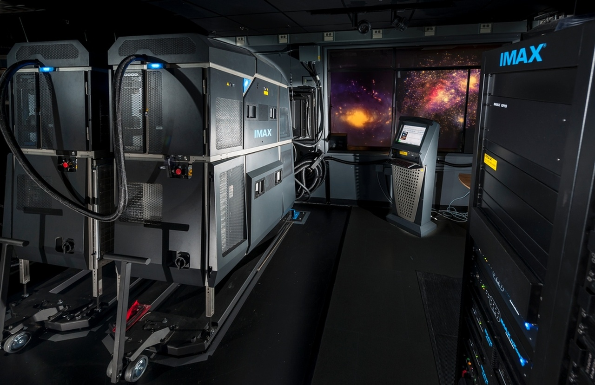
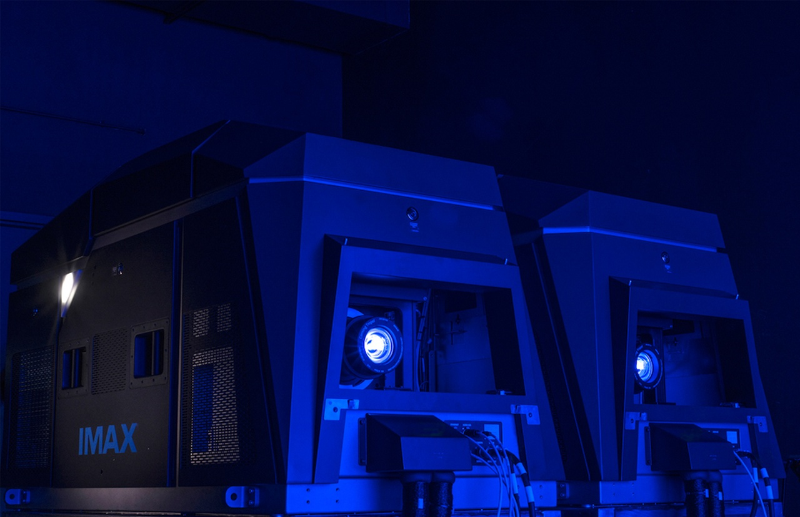
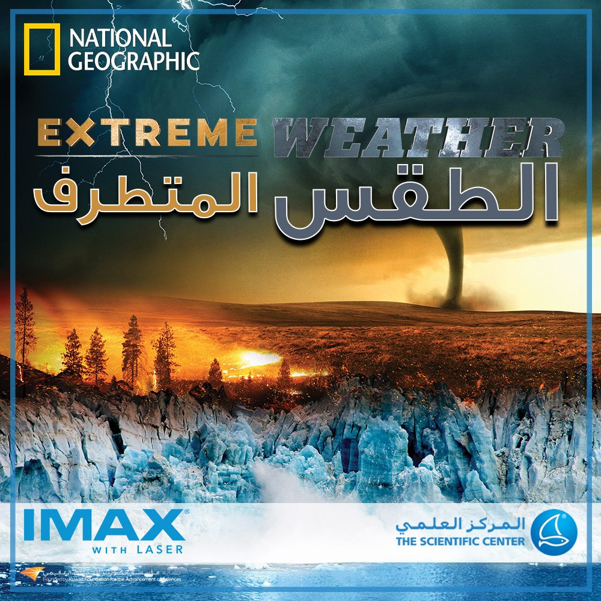
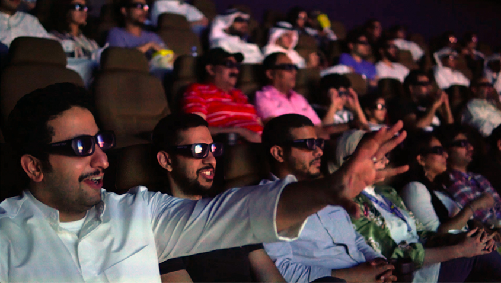

يحتوي دار العرض (IMAX) شاشتها العملاقة التي يبلغ ارتفاعها 15 متراً وعرضها 20 متراً تم تزويدها بأحدث ما توصلت إليه تقنيات العرض السينمائي وتعرض أفلاماً تعليمية ووثائقية تناسب جميع الأعمار بتقنية العرض ثلاثي الأبعاد
أفلام اي ماكس
مسرح آي ماكس (مع الليزر) بالمركز العلمي
يتيح لك مسرح آي ماكس (مع الليزر) بالمركز العلمي تجربة مشاهدة غير مسبوقة، فلمسرح الآي ماكس لدينا شاشة عملاقة بارتفاع 15 مترا وعرض 20 مترا، مجهزة بأحدث تقنية اسقاط والتي تشمل نظام الصوت الجديد الذي يحتوي 12 قناة منفصلة. يتم عرض أفلام تعليمية وثقافية ثلاثية الأبعاد باللغتين العربية والإنجليزية باستخدام أكبر صيغ الأفلام في مجال صناعة السينما.


يدعمها نظام صوتي غامر بقوة 8000 واط. تستخدم (IMAX) أكبر قياس أفلام عرفته صناعة السينما ويعادل 10 أضعاف القياس العادي (35) ملم.

فليم الطقس المتطرف
فيلم «الطقس المتطرف» يأخذنا إلى خطوط المواجهة الخطرة التي لم يرتدها سوى القليلين، حيث يسافر المشاهد إلى الأنهار الجليدية ويشاهدها وهي تنهار من ارتفاع 300 قدم، وإلى الخطوط الأمامية لحرائق الغابات الهائلة والأعاصير المدمرة
مغامرة الامازون
يحاول شادي وعُلا فكَّ اللَّعنة الَّتي جعلت مُرجانة تختفي، فيجدان نفسيهما في غابة الأمازون. لكنَّهما لا يعرفان عن الأمازون غير جيش النَّمل الَّذي يُلاحقهما، والتِّمساح الَّذي يُهاجمهما، وقرد مشاغب يرشقهما بثمرة استوائيَّة. والأهمُّ أنَّ اللَّيل سيحلُّ وستخرج الخفافيش المصّاصة للدِّماء من مخابئها...

صوت يأسر القلوب
مع الصوت المميز لآي ماكس، تعيش الحدث بواقعية تامة، سواءً كان انفجاراً هائلاً، أو همسة خفيضة داخل أذنك، بإيقاع عميق يهز البدن، حيث يضمن لك النظام المتكامل للمزج الصوتي المضبوط بأعلى درجات الدقة، ومكبرات الصوت الموجهة بمهنية تامة، ليس فقط سماع صوت سقوط الدبوس، بل وأن تحدد أين سقط بالضبط. كل نغمة من نغمات الموسيقى التصويرية ووقع كل خطوة على الأرض يُسمح بوضوح متناه في آي ماكس، بالإضافة إلى قيام مخرج كل عرض بإضفاء لمسته الخاصة على النظام الصوتي لإيصال رؤيته بشكل كامل، في صوت طبيعي بكر يضخ في أرجاء مسرحنا الذي تم إعداده ليمنحك التجربة المثلى.